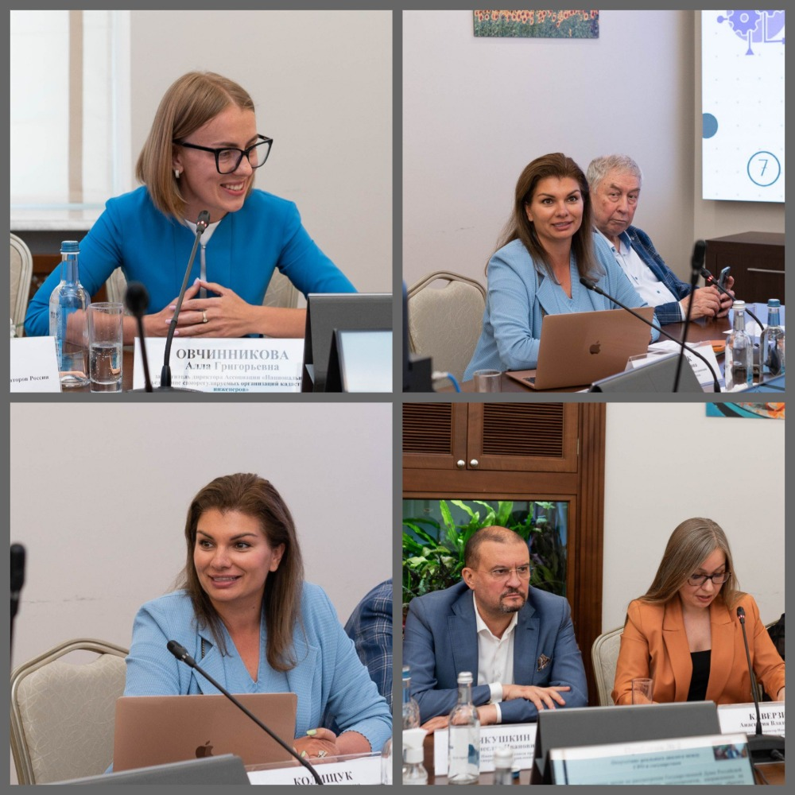

Приняли участие в конференции с Росреестром
24.07.2023Состоялась конференция «Взаимодействие саморегулируемых организаций и государства. Взгляд в будущее», организованная Управлением Росреестра по контролю и надзору в сфере саморегулируемых организаций, Комиссией «ОПОРЫ РОССИИ» по финансовому оздоровлению и банкротству, национальными объединениями саморегулируемых организаций различных форм профессиональной деятельности. Мероприятие посвящено 15-летию Росреестра.
Кроме того, в мероприятии приняли участие представители Министерства экономического развития Российской Федерации, Общественного совета при Росреестре, национальных объединений саморегулируемых организаций арбитражных управляющих, кадастровых инженеров, оценщиков, электронных торговых площадок, а также руководители саморегулируемых организаций различных сфер деятельности, сведения о которых включены Росреестром в соответствующие реестры саморегулируемых организаций.
Комиссия «ОПОРЫ РОССИИ» по финансовому оздоровлению и банкротству на конференции представили Председатель Комиссии Вячеслав Якушкин, заместитель Председателя Комиссии, генеральный директор НСПАУ Анастасия Каверзина и другие члены бизнес-объединения.
В рамках конференции спикеры и гости проанализировали опыт саморегулирования и контрольно-надзорной деятельности Росреестра, обсудили существующую практику применения и перспективы развития законодательства о саморегулировании.
С приветственным словом к участникам конференции обратился заместитель руководителя Росреестра Максим Смирнов.
Анастасия Каверзина в своем докладе на тему «Направления дальнейшего совершенствования института саморегулирования» обозначила наиболее острые проблемы, препятствующие развитию института, и предложила пути их решения.
«Саморегулируемыми организациями и их национальными объединениями накоплен существенный профессиональный опыт, у нас имеется большой потенциал для оказания содействия государству в регулировании определенных сфер экономических отношений, и мы готовы к эффективному сотрудничеству», — отметила Анастасия Каверзина.
Член Комиссии «ОПОРЫ РОССИИ» по финансовому оздоровлению и банкротству Ольга Колищук поделилась с присутствующими практическими примерами, свидетельствующими о необходимости введения института саморегулирования в новых сферах.
В завершение мероприятия была оглашена резолюция, в которой участниками конференции обобщены итоги проведенной работы и сформулированы рекомендации по приоритетным направлениям развития института саморегулирования.
